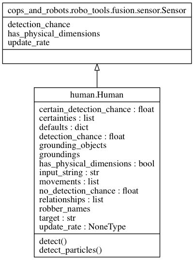

Human module¶
Provides a structured input interface for a human to the cop robot.
The human can provide some information that a robot can’t easily determine on its own (i.e. visual recognition of a target). Given a proper GUI, the human can send information that the fusion engine will merge with the robot’s own sensors to generate a rich probability distribution.
Currently the human uses a simple grounded, pre-defined codebook to provide information. For example, the human can say, “I think Roy is behind wall 3.” from a pre-defined codebook that has all robbers (i.e. Roy), spatial relationships (i.e. ‘behind’), and physical groundings (i.e. wall 3). This is the basic interface from which we will build upon.
Note
Only cop robots have human helpers (for now). Robbers may get human teammate upgreades in future versions, in which case this would be owned by the robot module instead of the cop module.
- class Human(shape_layer, robber_names, detection_chance=0.6)[source]¶
Bases: cops_and_robots.robo_tools.fusion.sensor.Sensor
The human sensor, able to provide updates to a fusion engine.
Parameters: - shape_layer (ShapeLayer) – A layer object providing all the shapes in the map so that the human sensor can ground its statements.
- robber_names (list of str) – The list of all robbers, for the human to specify targets.
- detection_chance (float) –
The human sensor’s ability to correctly name a target, given that the target is within the human sensor’s view – that is, P(D=i|x).
Note that this is the detection chance related to the “I think” statement, which can be increased if the human says “I know” instead.
- detect(particles=None)[source]¶
Update a fusion engine’s probability from human sensor updates.
Parameters: particles (array_like) – The particle list, assuming [x,y,p], where x and y are position data and p is the particle’s associated probability. None if not using particles.
- detect_particles(particles, zone, certainty)[source]¶
Update particles based on sensor model.
Parameters: - particles (array_like) – The particle list, assuming [x,y,p], where x and y are position data and p is the particle’s associated probability. None if not using particles.
- zone (str) – The zone specified by the human sensor.
- certainty (float) – The certainty specified by the human sensor.